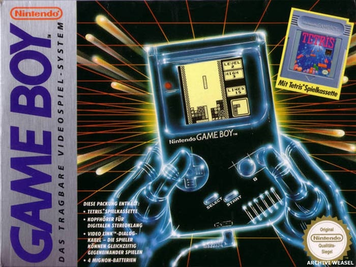

<
Serie de consolas portatiles alimentadas con pilas que recibió un
grandísimo apoyo. En su primer año vendió relativamente poco, sin
embargo, con la llegada del fenómeno Tetris las ventas se dispararon.
Lo negativo de ella fue la duración de las pilas y su gran tamaño
que mejoraría con la llegada de su sucesora.
>
